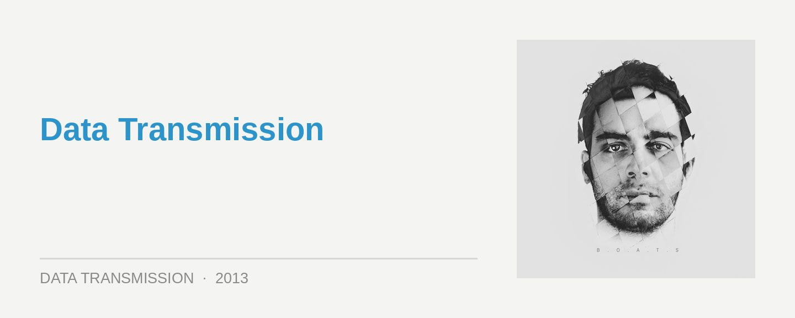

Clockwork – B.O.A.T.S
Label: Life and Death Score: 8/10
You could be forgiven for questioning the substance of the hype that had already grown behind Italian duo Clockwork. Beyond a few collaborative releases, Francesco Leali and Federico Maccherone had only parented the single EP on Hot Creations in 2011.
It’s You Again was a rock-solid debut that was only buoyed further by the hysteria that had swept around Jamie Jones and Lee Foss’s stable at the time of its release. Any dance act would risk losing that attention by waiting so long between releases; with their debut artist album though, it’s abundantly clear what Clockwork have been spending their time on.
Moving over to the Life and Death stable for B.O.A.T.S, Leali and Maccherone have delivered a debut that’s world apart from so many dance albums, where the producer strings together a swathe of club-ready singles. Clockwork’s approach here is nearly exactly the opposite; B.O.A.T.S is an album that for its majority stays well away from a rhythmic four-four, focussing instead on that seductive junction where techno meets melody. While their discography might be a bit sparse, you wouldn’t know it with all the sophistication that’s on show here.
The opening First Floor summons a sublime mix of floaty ambience, and sharp, steely tech – a good reflection of how these opposing elements are skilfully counterbalanced across the album, and Clockwork keep a rein on the energy in the album’s first half.
The most sublime moment comes early with Running, Searching, built around the guest vocals of labelmate Chasing Kurt, who’s gifted them with one of the most soulful, heartfelt dance vocals you’re likely to hear all year. The throbbing bassline keeps things simmering as the tension builds, before ripples of melody begin to rain down as Kurt’s vocals reach a crescendo. Clockwork have reached for something ‘higher’ here, and pulled it off with aplomb.
They’ve worked an impressive amount of musicality into their vision for B.O.A.T.S, which you could loosely tag as rich, melodic techno that’s been wound down a few gears for a more tempered, subdued listen. There’s a gradual shift towards the dancefloor at the halfway mark, with the brittle, techy rumbles of The Quiet Hour, managing to be both tough and beautiful.
Oblique is the closest you’ll find on the album to a techy banger, though for the most part they resist the temptation of a steely 4/4 kick. A lot of the dancefloor elements are still here though, only reframed in a more contemplate space; there’s a lot of potential for a good remix package.
In the press material, Clockwork speak of an elaborate story behind B.O.A.T.S (short for ‘Based on a True Story’) that develops track by track, suggesting they were shooting for a grand conceptual album. Even for Clockwork though, this was perhaps overreaching for their debut album, seeming a little superfluous in the second half when the momentum falters a little.
This doesn’t change the fact that Clockwork are punching well above their weight for such a fresh electronic act; the ideas, arrangements and compositions are all rich and sophisticated from beginning to end. B.O.A.T.S has enough charm to seduce listeners from across the spectrum of house and techno, though it’s rarely straightforward in how it presents this appeal. An incredibly sharp electronic album that’ll be remembered throughout 2013.